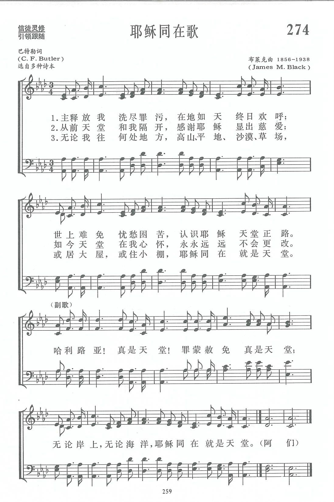

|
|
|
|
1 Since Christ my soul from sin set free, Refrain: 2 Once heaven seemed a far-off place, 3 What matters where on earth we dwell? |
第274首《耶穌同在歌》 |
|
https://www.zanmeishige.com/tab/13947.html?songbook=1&index=274

|
|
|
|
|


https://youtu.be/u71ysaJ_2xw -
Where Jesus Is, Tis Heaven a song written by Charles J. Butler in 1898. Sung
by The Church of God congregation.
https://youtu.be/WveMBQjD1nw - Where Jesus is, 'Tis heaven there - Han sol｜With Lyrics
https://youtu.be/nPDWETs4Gj4
| Text: | Where Jesus is, ''Tis Heaven |
| Author: | Charles J. Butler, 1879-1929 |
| Tune: | [Since Christ my soul from sin set free] |
| Composer: | James M. Black, 1856-1938 |
| Short Name: | |
| Full Name: | Butler, Charles F. |
Butler, Charles F. (fl. 1898). Known only from his "Since Christ Jesus my soul from sin set free" (Refrain: "O Hallelujah, yes, 'tis heaven"). This was copyrighted by James M. Black in his The Chorus of Praise (New York: Eton & Main, 1898). It appeared in about 100 hymnals, 1898-1978, mostly non-denominational gospel-song collections.
| Short Name: | James M. Black |
| Full Name: | Black, James M. (James Milton), 1856-1938 |
| Birth Year: | 1856 |
| Death Year: | 1938 |
James Milton Black USA 1856-1938
Born in South Hill, NY, Black was an American hymn composer, choir leader and Sunday school teacher. He worked, lived,and died in Williamsport, PA. An active member, he worked at the Pine Tree Methodist Episcopal Church there. He married Lucy Love Levan. He started his music career with John Howard of New York and Daniel B. Towner of the Moody Bible Institute in Chicago. He edited a dozen gospel song books and wrote nearly 1500 songs. He also served on the commission for the 1905 Methodist Hymnal.
第274首 耶稣同在歌 WHERE JESUS IS，IT IS HEAVEN _C．F.Butler
经文：“我就常与你们同在，直到世界的末了”(太28：20)。
这也是一首福音派喜欢唱的诗，在3O一5O年代时奋兴布道家们经常唱的，尤其是它的副歌，更是普遍。可惜作者巴特勒(C．F.Butler)的生平事略无法找到。
曲作者布莱克的事略参阅第117首。
耶稣同在，是他在离世前对门徒们的应许，也是对历代教会的应许。主说：“我就常与你们同在，直到世界的末了”(太28：2O)。主的应许信实可靠，主的话语从不落空。
这首诗围绕耶稣同在，叙事性地描绘了
主如何释放并洗净人的罪污(第一节)；
有主同在，天堂在人心怀(第二节)；任遇何事，任处何境，耶稣同在就是天堂。
副歌唱起来高昂快乐，男女老少，有口皆碑。